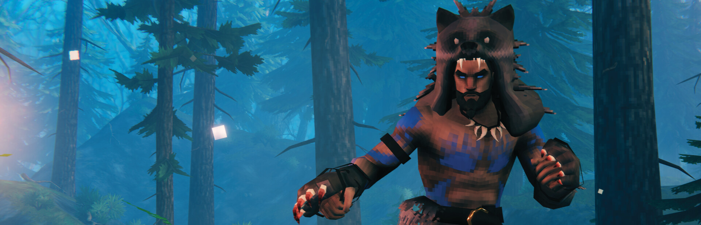

Valheim Guides — Survive the Tenth World
Your one-stop resource for Valheim. Boss progression order, all weapon types ranked, base building with structural integrity, complete biome guides, and a beginner walkthrough — all player-tested, all free.

Explore Our Guides
30 in-depth guides across 5 categories. Every article verified in-game and updated for the latest Valheim patch.
Boss Guides
All 7 Forsaken bosses — individual deep-dive guides with summoning, attack patterns, weaknesses, and strategies.
View all 8 guides →Equipment & Food
Weapons tier list, all 16 armor sets compared, 40+ food recipes with stats. Best gear for every biome.
View all 3 guides →World & Exploration
Every biome from Meadows to Deep North, sailing mechanics, trader locations, and crop farming systems.
View all 6 guides →Survival & Building
Base construction, raid defense with moats and walls, animal taming and breeding, and beginner walkthrough.
View all 4 guides →Technical & Multiplayer
Dedicated server setup (Windows/Linux/Docker), BepInEx modding, full console command list, and crossplay guide.
View all 4 guides →💡 Why Valheim Guides?
Valheim has depth. We make it accessible.
🎮 Player-Tested
Every boss strategy, every weapon ranking, every building technique verified through multiple playthroughs. No copied wiki data.
📊 Data-Rich
Damage numbers, structural integrity calculations, resource requirements, biome progression charts — the numbers you need.
🔄 Updated 2026
Updated for the latest Valheim patch including Ashlands and preparing for Deep North. Updated: July 10, 2026.
❓ Quick Answers
What order should I fight the bosses?
What's the best weapon in Valheim?
How does building structural integrity work?
Can I skip biomes?
7 Bosses. 7 Biomes. Infinite Builds.
Valheim has sold 12 million+ copies for a reason. Bookmark us for guide updates as new content drops.
Data Sources & References
Was this page helpful?